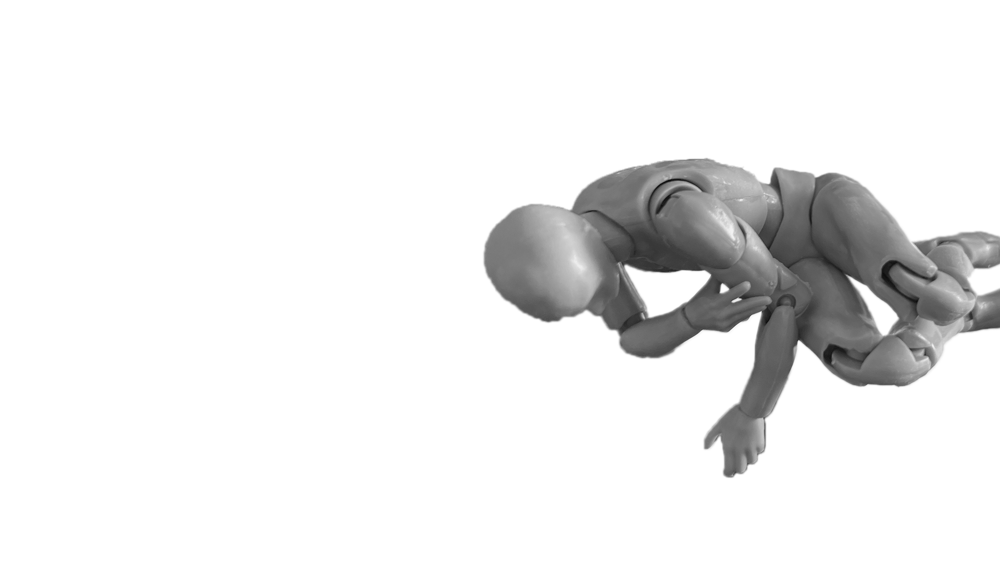
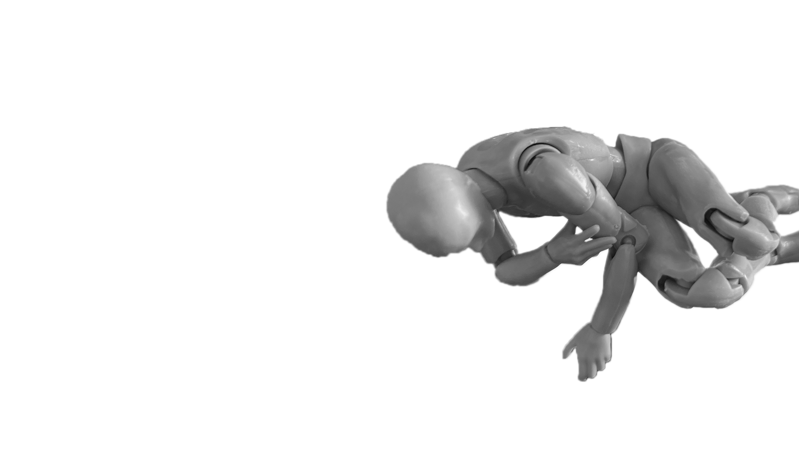

Name - Baki Pose
Origin - Baki (Chapter 29)
Date - April 1997
By - Keisuke Itagaki
Baki Hanma in the title page is training before his long awaited date. This pose became popular on Tik Tok because of its difficulty to replicate. Fitness lovers took it as a challenge to replicate this pose in order to show off their strength.